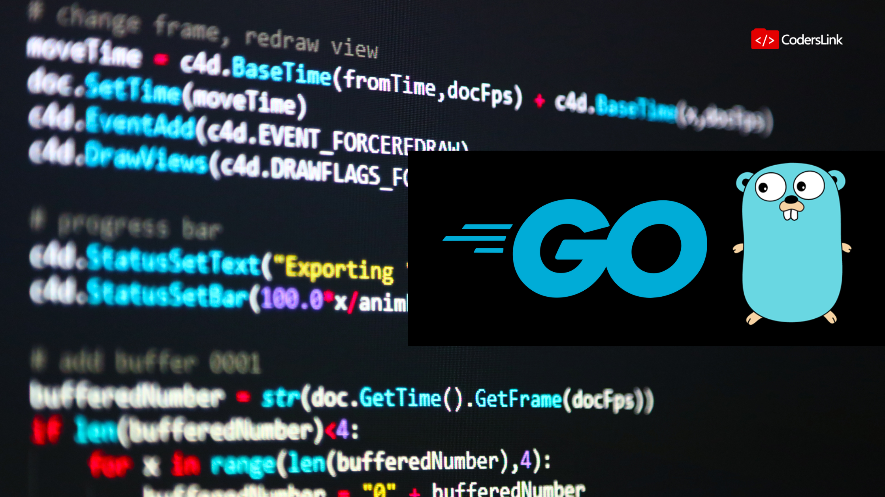
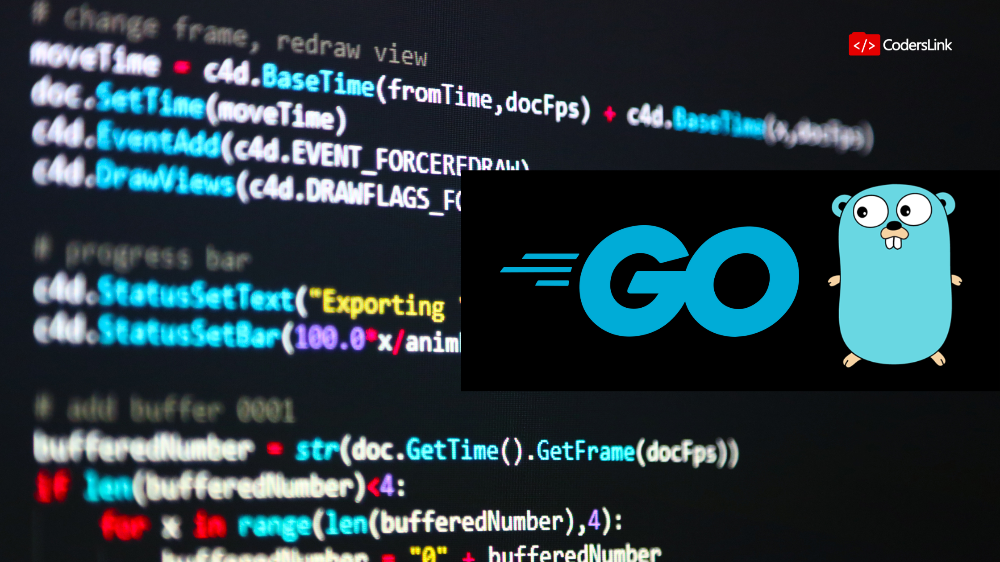

Los lenguajes de programación se utilizan para hacer funcionar las páginas web, las apps, el software y todo tipo de dispositivo que requiere programación informática y conocimientos de código. De acuerdo a su finalidad, la clasificación de lenguajes de programación es la siguiente: Lenguaje máquina. Lenguajes de programación de bajo nivel. Lenguajes de programación de alto nivel. En grandes rasgos, el lenguaje máquina es el que usa cualquier máquina y se basa en un código binario; los lenguajes de bajo nivel, pueden variar según el ordenador o máquina que se utilice; y, por último, el lenguaje de alto nivel es un lenguaje que utiliza comandos y palabras (normalmente en inglés), las cuales es fácil de entender para un programador. Sobre esta última clasificación de lenguajes de programación, los de alto nivel, son sobre los que hablamos cuando hablamos de programación de web y apps. Estos se crearon con la finalidad de que el usuario o profesional pudiese solucionar procesamientos de datos complejos de una manera más sencilla. Esto significa, ganar flexibilidad al poder utilizar un tipo de lenguaje adecuado para el ser humano y no únicamente orientado al entendimiento de la propia máquina o dispositivo programado. Lenguajes de programación que existen (y se utilizan) en la actualidad Como ya hemos comentado, existen innumerables lenguajes de programación. Hoy en día, estos son usados por los desarrolladores Frontend y Backend para programar tanto la parte visible como el código que hace que todo funcione detrás de una web, aplicación o software. Seguramente conozcas los principales (C, Python, PHP, Java, JavaScript o Ruby) pero existen muchos más.
Un lenguaje de programación de alto nivel se caracteriza por expresar los algoritmos de una manera adecuada a la capacidad cognitiva humana, en lugar de la capacidad con que los ejecutan las máquinas. Estos lenguajes permiten una máxima flexibilidad al programador a la hora de abstraerse o de ser literal. Permiten un camino bidireccional entre el lenguaje máquina y una expresión casi oral entre la escritura del programa y su posterior compilación. Por lo general suelen estar orientados a objetos, a eventos o a funciones, pudiendo estos combinarse. Asimismo, pueden ser compilados o interpretados.
Algunos ejemplos son:


En los primeros lenguajes, la limitación era que se orientaban a un área específica y sus instrucciones requerían de una sintaxis predefinida. Se clasifican como lenguajes procedimentales o lenguajes de bajo nivel. Otra limitación de estos es que se requiere de ciertos conocimientos de programación para realizar las secuencias de instrucciones lógicas. Los lenguajes de alto nivel se crearon para que el usuario común pudiese solucionar un problema de procesamiento de datos de una manera más fácil y rápida. Lenguaje de alto nivel se refiere al nivel más alto de abstracción de lenguaje de máquina. En lugar de tratar con registros, direcciones de memoria y las pilas de llamadas, lenguajes de alto nivel se refieren a las variables, matrices, objetos, aritmética compleja o expresiones booleanas, subrutinas y funciones, bucles, hilos, cierres y otros conceptos de informática abstracta, con un enfoque en la facilidad de uso sobre la eficiencia óptima del programa.
Un lenguaje de programación de características de bajo nivel o de primera generación es aquel en el que sus instrucciones ejercen un control directo sobre el hardware y están condicionados por la estructura física de las computadoras que lo soportan. El uso de la palabra bajo en su denominación no implica que el lenguaje sea menos potente que un lenguaje de alto nivel, sino que se refiere a la reducida abstracción entre el lenguaje y el hardware. Los otros lenguajes que completan la clasificación no serían ya lenguajes de bajo nivel. Lenguajes de medio nivel: Son aquellos que, basándose en los juegos de instrucciones disponibles (chip set), permiten el uso de funciones a nivel aritmético, pero a nivel lógico dependen de literales en ensamblador. Estos lenguajes están orientados a procedimientos. Los procedimientos se componen de procesos. Ejemplos: C, Basic. De mayor nivel pero aun así considerables de nivel medio: C++, Rust, Fortran, Cobol, Lisp,Go.
 
